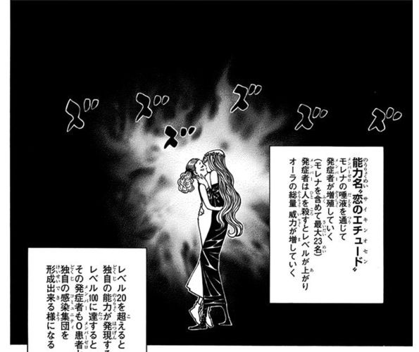

モレナ＝プルード
- 登録名
- モレナ＝プルード
- 分類
- マフィア
初期配置は台帳の当初の担当先です。後任の人物や復元枠も含み、全員の出航時の在室を示すものではありません。後の展開は下の折りたたみにまとめています。
人物詳細（後の展開を含む）
- 状態
- 存命
- 所属
- エイ＝イ一家
- 役割
- エイ＝イ一家 組長
- 最後の所在
第3層 302号室（エイ＝イ一家拠点）（第378話時点・場所は画像で確認）
ほかの関係記録（本人の在室は未確認）
- 念使用の確認
- 念使用：確認済み
- 念系統
- 特質系
- 念能力
- 恋のエチュード（サイキンオセン）：唾液を通じて他者に念能力を発症させる感染型特質系能力。発症者（0患者ことモレナ含む）は一般人殺害で+1・念能力者で+10・王子で+50レベルアップ。レベルに比例してオーラ量も向上し、Lv21で発症者独自の念能力（発）を取得、Lv100到達で新たな0患者となり感染を広げられる。子は定員22人（0患者の本人を含めて計23人）。
- 第410話で交渉ゲームとカードも能力の一部と説明し、不正時には操作系能力が自動発動して子はYesかNoしか選べなくなる。完全加入にはYesの結論・キスによる感染・仲間の殺人現場への居合わせの3条件が必要
家族関係
- [親子（名義上）] ホイコーロ国王（父（名義上））
第378話の人物紹介では、モレナ＝プルードはホイコーロ国王と愛人の娘とされる。第408話では現在の組長本人が王族ではなく、本物のモレナは既に墓の中にいると説明する。現在の人物の実父をホイコーロと確定する関係ではなく、モレナの名義上の親子関係として記録する。

編集状況
- 人物ID：EII-001
- 状態の確認話数：未登録／根拠の出来事：未照合
- 公開データの登録情報から生成したページです。個人メモ・編集内容・調査記録は含めません。
- 一覧の詳細でメモ・編集
情報源：公開人物台帳・公開出来事台帳。